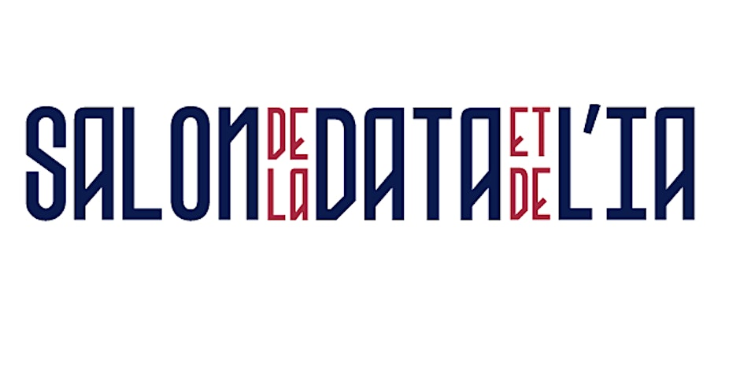

Mise en œuvre d’une enquête – Retour d’expérience au Salon Data & IA de Nantes
Dans une démarche centrée sur l’expérience utilisateur et l’analyse de la satisfaction, j’ai piloté la conception et la mise en œuvre d’un questionnaire d’évaluation post-événement à destination des participants du Salon Data & IA de Nantes.
L’objectif principal de cette enquête était de recueillir des retours qualitatifs et quantitatifs sur plusieurs dimensions clés de l’événement :
- Organisation générale
- Qualité des conférences et interventions
- Accueil et logistique
- Utilité perçue des contenus
Développement et déploiement de l’enquête
- 🔹 Conception méthodologique
- Élaboration d’un plan de questionnement structuré, combinant questions fermées, échelles de Likert et champs libres.
- Formulation rigoureuse des questions pour éviter les biais cognitifs ou les ambiguïtés.
- Définition de segments d’analyse (type de participant, domaine d’activité, attentes…).
- 🔹 Outil utilisé : le logiciel Sphinx
- Création de l’enquête à l’aide de Sphinx iQ, logiciel professionnel dédié aux enquêtes statistiques.
- Mise en page ergonomique et responsive, pour une consultation fluide sur tous supports.
- Paramétrage de la collecte (accès via QR code, email, ou borne sur site).
- 🔹 Analyse des réponses
- Nettoyage et filtrage des données recueillies pour assurer leur qualité.
- Calcul d’indicateurs de satisfaction globale et par catégorie (note moyenne, taux de satisfaction, fréquence des retours négatifs).
- Production de tableaux croisés, graphiques et recommandations synthétiques à destination des organisateurs.
Compétences développées
- Maîtrise du processus de sondage : de la conception à l’analyse.
- Utilisation avancée du logiciel Sphinx : outil largement utilisé dans les études de marché et enquêtes de satisfaction.
- Rigueur méthodologique : notamment dans la formulation des questions, l’échantillonnage et l’analyse statistique.
- Compétences en visualisation de données : pour restituer les résultats de manière claire et exploitable.
- Sens de la communication : écoute des besoins clients à travers l’interprétation des retours utilisateurs.

Retour à l'accueil